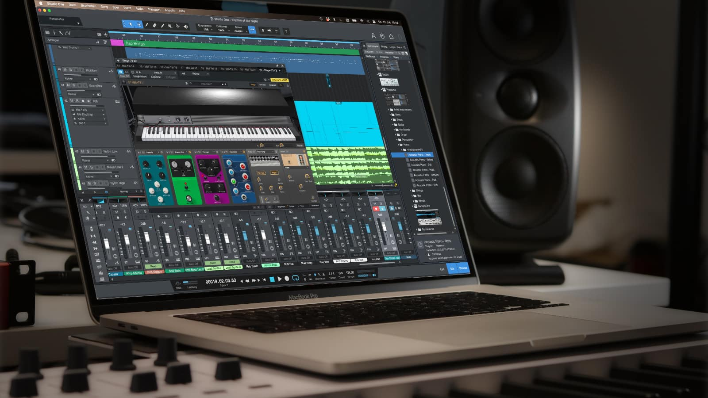
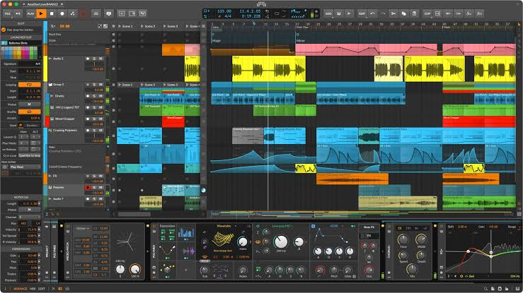
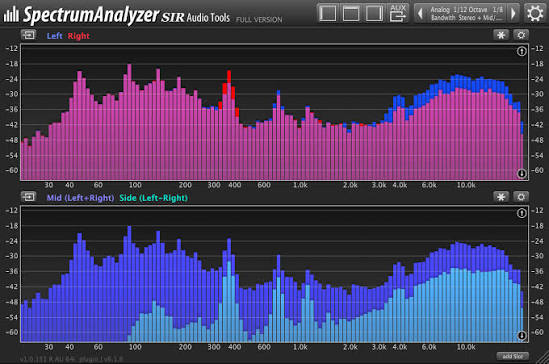

What Is a Digital Audio Workstation?
Modern Music and its production have become so complex and diverse that we normally dont even bother to wonder how the process works, and what are the tools involved.
Traditional Music Production involved a live ensemble of instrumentalists, vocalists, directors, etc for a session. Any error was fatal to the entire recording. Every Iteration required re-permormance of the same piece of composition.
A DAW ( Digital Audio Workstation ) is a virtual music studio, that runs on a computer environment. It can record vocals and instruments, arrange musical ideas, edit audio, create sounds using virtual instruments, and combine everything into a finished track. The producer can make iterations without the need of re-enactment of the entire composition by the performers.

DAWs today find their use outside just music production. They play an essential role in podcasts, film and video game sfx too.
How Does a DAW Work?
Most DAWs organise a project into tracks. Each track can contain recorded audio, MIDI information, or sounds generated by virtual instruments. MIDI is a system that communicates musical information, such as notes, their timing, and their velocity, rather than storing the actual sound itself.

Producers can place tracks on a timeline, adjust their volume, apply effects, and synchronise different musical parts. Effects such as equalisation, compression, delay, and reverb help shape the final sound. Once the arrangement is ready, the project can be exported as an audio file.

Popular Digital Audio Workstations
Different DAWs offer different workflows. Some focus on recording live instruments, while others are especially popular for electronic music and live performance.
| DAW | Company | Known For | Used for |
|---|---|---|---|
| REAPER | Cockos | Insane Costomisability, Infinite Addon possibilities, Elite Audio Routing Capability and plugin support 🫶🫶🫶 | Film/Game scoring and sfx, General music production, Podcast, Recording based production |
| FL STUDIO | Image Line | Pattern-based music creation, Insane stock plugins | Beats and electronic music |
| LIVE | Ableton | Session View and live performance | Electronic music and performing |
| LOGIC PRO | Apple | High quality integrated instruments and effects | Music production on macOS |
| CUBASE | Steinberg | The GrandDaddy of DAWs. Extensive use in Orchestra based music and film scoring. Powerful Music production tools and workflow. | Film Scoring, Orchestra, EDM |
| PRO TOOLS | Avid | Avid its done bro 🥀 | Dont even wanna talk about this :) |
How Can a Beginner Get Started?
The first glance at a DAW screen can feel overwhelming at first.... just a jumble of buttons, tracks, plugins, and technical stuff to understand. But fortunately, getting into music production in 2026 is easier than ever. Theres no need of expensive equipment or professional studios to start experimenting. Bedroom producer is really a thing. All prominent producers today started out with their laptop and a pair of headphones in their bedrooms, releasing music on unknown labels and undiscovered soundcloud pages.
Essential Things to Learn
- Understand the interface, tracks, and timeline.
- Learn to record audio and arrange MIDI notes.
- Experiment with basic effects and volume levels.
- Practise balancing different sounds in a mix.
- Export a finished track and listen to the result.
Useful Equipment and Resources
- A computer capable of running your chosen DAW.
- Headphones or speakers for monitoring audio.
- A microphone or instrument, if you want to record.
- Infinite free and genuinely useful tutorials online
- Genuine interest and a willingness to experiment 🤗
Start with small projects instead of trying to produce a perfect song immediately. Even creating a simple beat, recording a guitar melody, or editing a voice recording can teach you valuable skills. Honestly music production has no set rules. Every artist comes with his own sould in his music, and that comes from experimenting with boundaries, not being restricted into them.
Conclusion
Digital Audio Workstations have made music production more accessible than ever. They give independent musicians and beginners access to tools that once required specialised studios. Although every DAW has its own strengths, learning the fundamentals of recording, arrangement, and mixing is more important than choosing the most expensive software.
A DAW is not a substitute for creativity; it is a tool that helps turn creative ideas into reality. Whether you want to compose songs, produce electronic music, record a band, or design sound for films and games, the best way to begin is to open a project, experiment, and keep creating.